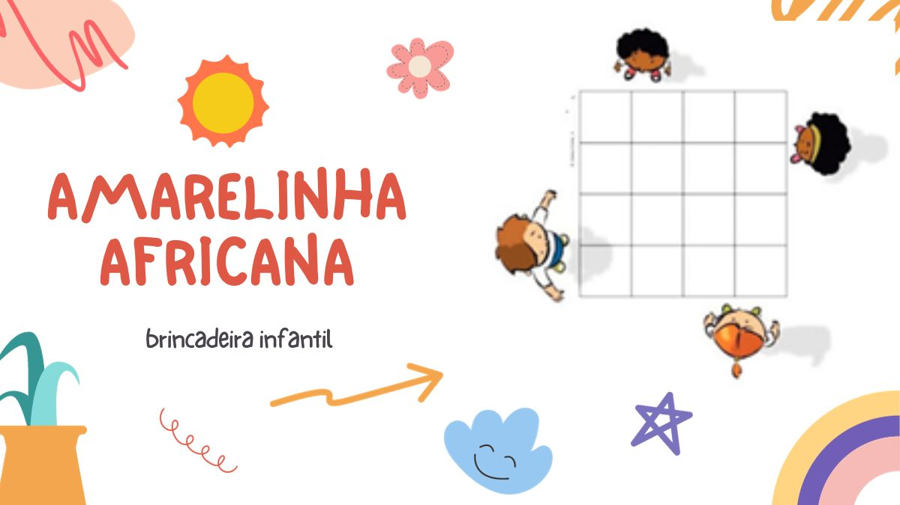
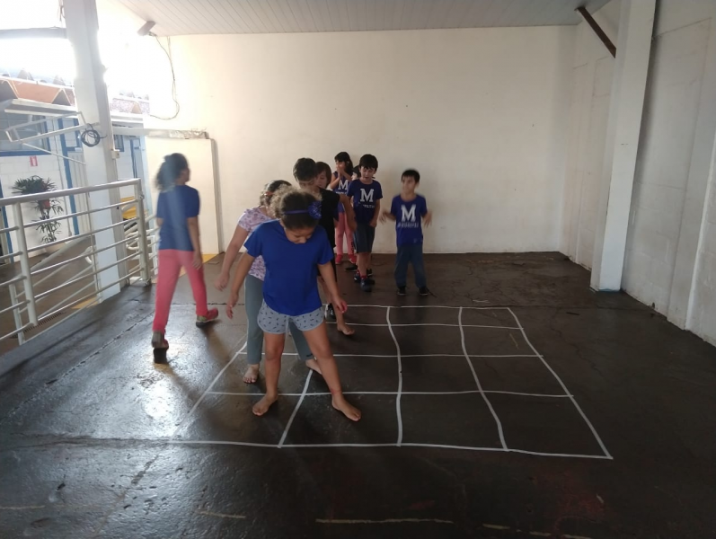

09 de Outubro de 2023
O que é Amarelinha Áfricana ?

A amarelinha africana é entendida como um jogo, ou uma brincadeira, com origens em
Moçambique, um país do continente africano. Ela se caracteriza por ser uma brincadeira ritmada,
Apaixonado por Tecnológia , minha carreira começou aos 19 anos
ou seja, segue uma constância regular na realização dos movimentos. Desse modo, usa
acompanhamentos musicais que demarcam seu ritmo. No entanto, o ritmo também pode ser
marcado a partir de palmas ou de cantos realizados pelos participantes.
Relacionadas
Jogos Cooperativos : Os jogos cooperativos são práticas lúdicas que visam estimular a colaboração em dinâmicas do
dia a dia, seja no contexto educacional formal, no ambiente de trabalho ou em outros espaços
sociais.
Cabo de Guerra : O cabo de guerra é uma prática esportiva em que adversários disputam forças, individualmente
ou em duplas, por meio de um cabo.
Tchoukball : Tchoukball é um esporte coletivo disputado por duas equipes de nove jogadores, sem contato
corporal ou intercepção de lançamentos de bolas.
Essa amarelinha pode ser praticada por uma ou mais pessoas, dependendo das movimentações a
serem realizadas. Além disso, difere da tradicionalmente conhecida no Brasil desde sua estrutura
até sua forma de organização. O jogo é estruturado em 16 quadrados, distribuídos entre quatro
fileiras e quatro colunas. Ainda, por sua estrutura, ele não utiliza pedrinha ou o espaço demarcado
como “céu” na amarelinha tradicional.
É importante pontuar também que a amarelinha africana apresenta uma ampla gama de
variações para o brincar. Sendo assim, possui uma estrutura básica mais conhecida. No entanto,
também podem ser criadas movimentações entre os participantes da brincadeira, respeitando as
regras que a fundamentam. Entenda melhor essas questões a seguir.
09 de Outubro 2023
Como jogar amarelinha africana ?

Como comentado, a amarelinha africana, que também é chamada de teca-teca, é jogada de
diferentes formas, utilizando um espaço quadriculado 4×4 (16 quadrados). Esse espaço constitui a
“quadra” do jogo. Assim, as movimentações da brincadeira são definidas previamente entre os
participantes, assim como a forma de marcação do ritmo. Com esses elementos definidos, a
brincadeira pode ser realizada.
A forma mais simples de brincar de amarelinha africana é a seguinte: um jogador se posiciona
em frente à extremidade esquerda dos quadrados e inicia saltando com um pé em cada quadrado
(primeira fileira). Na sequência, desloca-se lateralmente para a esquerda e retorna ao ponto de
partida, saltando sempre para o quadrado livre na lateral e mantendo um pé em cada quadrado.
Ao retornar aos primeiros quadrados nos quais saltou, o jogador salta nos quadrados da fileira da
frente (segunda fileira) e realiza as mesmas movimentações de deslocamento. Assim, segue essa
dinâmica, deslocando-se, então, para a terceira e a quarta fileira e, assim, terminando o jogo. Vale
ressaltar que cada salto de deslocamento deve ocorrer na marcação mais forte da música (ou do
ritmo) de acompanhamento.
Essa é a forma mais tradicional e simples de jogar amarelinha africana. É importante frisar que o
deslocamento lateral (ida e volta) nos momentos ritmados é uma característica fundamental
desse jogo. Sendo assim, veja os vídeos a seguir para saber mais sobre a amarelinha africana.
Com eles, você também pode conferir outras formas de realizar a brincadeira e ter ideias para
criar sua própria forma de brincar.
A corrida de saco é uma divertida atividade que estimula a coordenação motora e a capacidade de se locomover, além de ajudar a desenvolver a
cooperação entre os participantes.
Esta atividade é muito popular entre as crianças, principalmente na educação infantil, e pode ser uma ótima maneira de estimular o bem-estar
físico e mental.
A corrida de saco é uma brincadeira divertida onde os participantes devem correr e transportar um saco de pano para a linha de chegada.
Esta atividade é muito fácil de configurar e pode ser adaptada para qualquer idade ou habilidade.
O objetivo principal é ajudar as crianças a desenvolver suas habilidades de coordenação motora, o que é essencial para o desenvolvimento
saudável dos pequenos. Além disso, a prática da corrida de saco estimula a cooperação entre os participantes, pois é necessário trabalhar em
equipe para alcançar a linha de chegada.